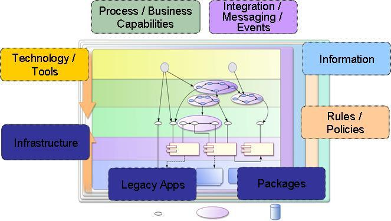

There are multiple entry points to any engagement in particular and specially based on Service-Orientation such
as:
-
Business Process - Process transformtion, optimization, improvement, and redesign
-
Business Capabilities - Business to IT alignment but organization is not mature enough for business process
management
-
Integration, Messaging, Events - Integration with legacy systems, events handling using messaging back bone or
Enterprise Service Bus
-
Information- Information management issues like data disparity, diverse underlying data sources, master data,
360o view
-
Rule and Policy - Rules every where and business rule management
-
Legacy Application - Leverage existing systems and application such as CICS transactions, COBOL applications
-
Package Application - Leverage package applications such as SAP, Oracle
-
Infrastructure - Technology strategy and architecture
-
Tools and Technology - WebSphere Process Server (WPS) or a BPEL Engine, WebSphere DataPower, WebSpere Service
Registry and Repository (WSRR)

We typically assess the client’s pain points and identify entry points to identify the primary SOMA practices and
capability patterns that will be used for the engagement. In other words, sometimes, we will embark from an information
perspective, other times from a process perspective, and other times from a rules perspective, and other times from an
existing asset perspective. Note that SOMA Identification requires a combination of techniques to cast a wide net and
uncover and include business and IT capabilities within the service portfolio that span a wide variety of sources.
Depending on the entry point, there will be one or two primary techniques. However, it is recommended to employ a
combination of identification techniques to achieve maximum benefit.
|